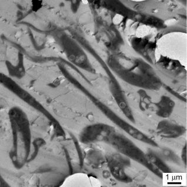
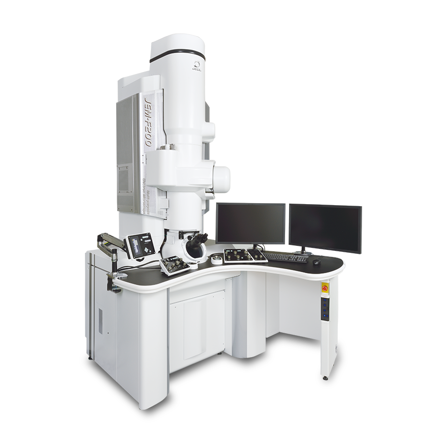
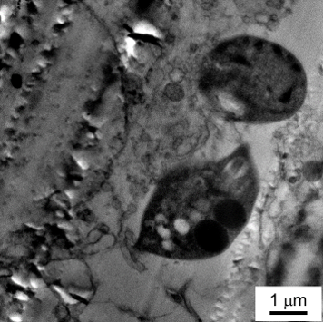
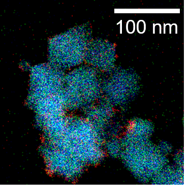

Sample details: TEM image of Leishmania donovani promastigotes, the extracellular, motile, free-living form found in the midgut of the sand fly vector.
Sample from: Nilanjan Pradhan [Prof. B. Mukherjee lab, SMST, IIT Kharagpur]
ANALYTICAL TEM. CRF. IIT KHARAGPUR
Analytical electron microscopy for exploring the structure and composition of materials.

FIND US
Room 004, Ground Floor
Nano-SATHI-CRF Building
Diamond Jubilee Complex
IIT Kharagpur
FACILITY RESULTS

Sample details: TEM image of Leishmania donovani promastigotes, the extracellular, motile, free-living form found in the midgut of the sand fly vector.
Sample from: Nilanjan Pradhan [Prof. B. Mukherjee lab, SMST, IIT Kharagpur]

Sample details: (TEM) image of Leishmania donovani amastigotes, the intracellular, non-motile stage that resides within the Phagocytophorus vacuole of primary macrophages.
Sample from: Nilanjan Pradhan [Prof. B. Mukherjee lab, SMST, IIT Kharagpur]

Sample details: STEM-EDS composition mapping of catalytic nanohybrid - Pt nanoparticles [in red] on Cobalt manganese oxide octahedra.
Sample from: Dileshwari Sahu [Ahin Roy's lab, Materials Science Centre, IIT Kharagpur]
FACILITY SCHEDULE
The slot calendar will appear here once it is connected.
These are company-specified specs. REAL DATA LARGELY DEPENDS ON SAMPLE QUALITY
OPERATOR
Anirban Kule
kuleanirban@gmail.com
Room 004, Ground Floor
Nano-SATHI-CRF Building, Diamond Jubilee Complex
IIT Kharagpur
FACILITATOR
Ahin Roy
ahin.iitkgp@gmail.com
225, Materials Science Centre
IIT Kharagpur
Ph: +91-3222-283988